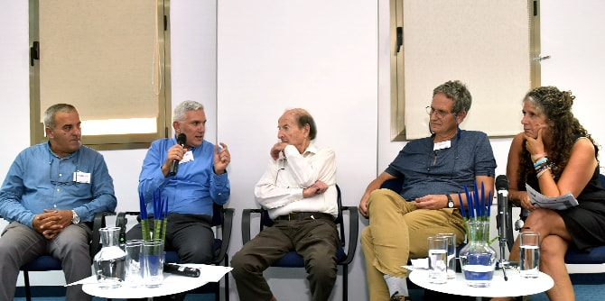
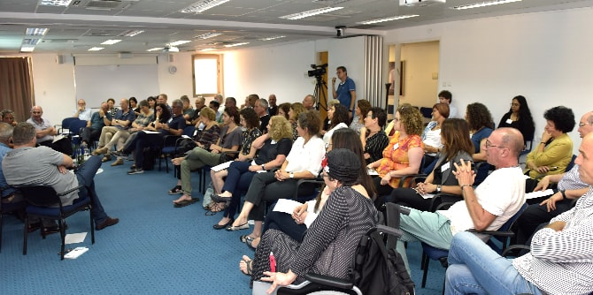

ביום שני, 6 באוגוסט 2018, קיימה יחידת בוגרי מנדל ערב הוקרה לפרופ' חיים אדלר, חבר סגל ביחידת הבוגרים. בערב נחגג פרסום ספרו האוטוביוגרפי "זיכרונות ותובנות" וצוין יום הולדתו התשעים. עשרות בוגרי בית ספר מנדל למנהיגות חינוכית הגיעו והביעו את הערכתם ואת הוקרתם לתרומתו המשמעותית לדרכם ולעשייתם.

הערב עמד בסימן פועלו רב השנים של פרופ' אדלר, חתן פרס ישראל לחינוך. כמה מבוגרי מנדל הדגימו את עשייתו העשירה בהציגם נקודות מבט שונות בנושאי חינוך וחברה בהקשר של עשייתם והשפעתו עליה.
מרדכי כהן, מנכ"ל משרד הפנים ובוגר מחזור ח', סיפר על קידום אזורים פריפריאליים;
ד"ר חסן אגבריה, מפקח כולל על בתי ספר יסודיים במחוז חיפה ובוגר מחזור ח', הציג את מערכת החינוך הפורמלית כזירת השפעה מרכזית וחשובה לשינוי חברתי בכלל ובחברה הערבית בפרט;
מנדי רבינוביץ, מנהל קמפוס בית בירם התיכון של בית הספר הריאלי בחיפה ובוגר מחזור י', הציג את התלבטותו לגבי מהי זירת ההשפעה המיטבית – פוליטיקה או חינוך;
ד"ר שרה שדמי-וורטמן, יו"ר מרכז "ק.מ.ה – קהילה, מנהיגות, השראה" במכללת אורנים ובוגרת מחזור ד', הציגה דילמות בעקבות המפגש בין אקדמיה לאקטיביזם חברתי;
גידי צור, מנכ"ל ומייסד עמותת "כיוונים" לקידום צעירים עם נכויות בישראל ובוגר מחזור ה', סיפר על חיבור במעשה ובתיאוריה בין שדה החינוך הבלתי פורמלי לבין השדה השיקומי;
ד"ר גרניט אלמוג-ברקת, מנהלת יחידת בוגרי מנדל ובוגרת מחזור י"ד, סיפרה על מודל השותפות של יחידת הבוגרים.

את חלקו הראשון של הערב חתמו
פרופ' עמי וולנסקי, חבר סגל בבית ספר מנדל למנהיגות חינוכית,
ופרופ' חיים אדלר. בהמשך נערכה פעילות להעמקת ההיכרויות והשותפויות בין הבוגרים וניתנה הזדמנות לשתף בסוגיות חינוכיות וחברתיות. את הערב הובילו
ד"ר גרניט אלמוג-ברקת, מנהלת יחידת בוגרי מנדל,
ואיילה בבלי, מנהלת העריכה ביחידת בוגרי מנדל.
{kind=link}
{kind=link}